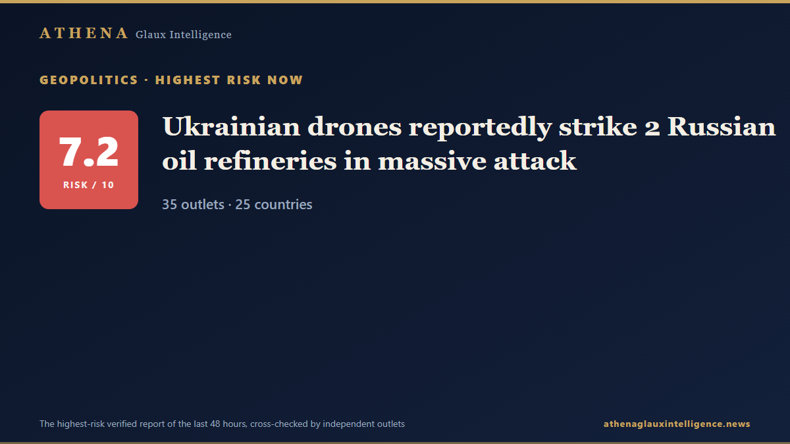
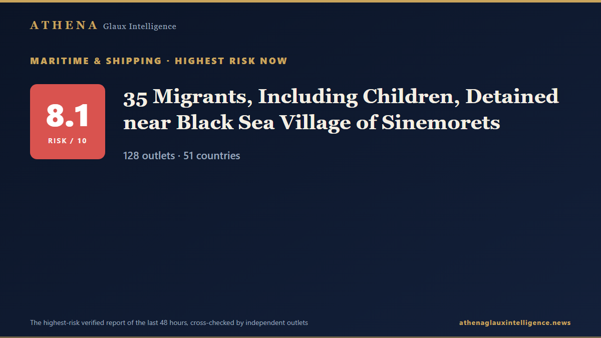
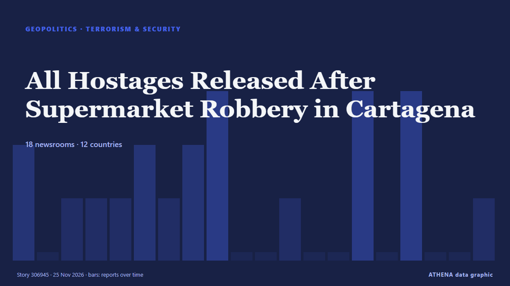

Κίνδυνος 7.2Αυξημένος
Γεωπολιτική, οικονομία και θαλάσσια ναυτιλία — διασταυρωμένα σε πολλές χώρες.
Γεωπολιτική
Όλη η Γεωπολιτική >Υψηλότερος κίνδυνος τώρα

Αυξανόμενος κίνδυνοςΑύξηση τις τελευταίες 24 ώρες
- Israeli strikes in Gaza kill 7, including senior security officialΚίνδυνος 2.5 → 5.7
- Israeli Defense Minister Says Iran Developing Chemical WeaponsΚίνδυνος 0.0 → 6.5
- Israel's genocidal actions are preventing births in GazaΚίνδυνος 0.0 → 4.0
Ναυτιλία & ναυσιπλοϊα
Γραφείο Ναυτιλίας >Υψηλότερος κίνδυνος τώρα
Κίνδυνος 8.1Κρίσιμος
35 Migrants, Including Children, Detained near Black Sea Village of Sinemorets
Δείτε τα στοιχεία ›
Αυξανόμενος κίνδυνοςΑύξηση τις τελευταίες 24 ώρες
- Houthis hit Riyadh’s tallest tower, 11 wounded, Saudi Civil defense saysΚίνδυνος 1.5 → 5.3
Κάθε είδηση, ελεγμένη σε πολλές χώρες.
Το ATHENA Glaux παρακολουθεί 744 ειδησεογραφικά μέσα σε όλο τον κόσμο. Μια είδηση γίνεται επαληθευμένο γεγονός μόνο όταν την αναφέρουν ανεξάρτητα μέσα. Κάθε γεγονός δείχνει ποιος το ανέφερε πρώτος και έναν βαθμό κινδύνου με τους λόγους του.
1.425γεγονότα σε 24 ώρες
744μέσα που παρακολουθούμε
41λεπτά ανάμεσα στις ενημερώσεις
Σεισμός ή πλημμύρα κοντά σας αυτή την εβδομάδα;
Γράψτε την πόλη σας και δείτε σεισμούς, πλημμύρες, καταιγίδες και επίσημες προειδοποιήσεις κοντά της, με λίστα κιτ έκτακτης ανάγκης 72 ωρών. Δωρεάν, χωρίς εγγραφή, και η περιοχή σας μένει στη συσκευή σας.
Αναφορές έρχονται από ανεξάρτητα μέσα — όταν δύο συναντηθούν στην ίδια ιστορία, γίνεται επιβεβαιωμένο γεγονός.
Πώς ελέγχει το ATHENA μια είδηση
- ΣυλλογήΟι αναφορές φτάνουν από ανεξάρτητα μέσα σε πολλές χώρες.
- ΑντιστοίχισηΌταν δύο μέσα συναντιούνται στην ίδια είδηση, γίνεται επαληθευμένο γεγονός.
- ΕξήγησηΚάθε γεγονός δείχνει ποιος ήταν πρώτος, πόσο εξαπλώθηκε και γιατί ο κίνδυνος είναι αυτός.
Παγκόσμια προοπτική κινδύνου
Εβδομαδιαίες και μηνιαίες επισκοπήσεις: τα γεγονότα υψηλότερου κινδύνου, οι τάσεις ανά τομέα και περιοχή και τι να παρακολουθήσετε.
Διαβάστε την προοπτική ›Ημερήσια ενημέρωση
Τα δέκα σημαντικότερα γεγονότα της ημέρας στον κόσμο, οι αυξανόμενοι κίνδυνοι και τα νέα γεγονότα, με κάθε αριθμό εξηγημένο.
Ανοίξτε τη σημερινή ενημέρωση ›
ΓεωπολιτικήAll Hostages Released After Supermarket Robbery in Cartagena
The hostage situation that kept Cartagena on edge for more than 17 hours ended early Wednesday, November 25, after special forces from the National Police and the Military Forces carried out a joint… από Colombia One
6.0Σημασία
5.8Κίνδυνος · αυξημένος
92%Βεβαιότητα
Οι τίτλοι των ειδήσεων παρουσιάζονται στα αγγλικά, όπως δημοσιεύτηκαν.
Γεωπολιτική
Libya: 2 dead after Ukrainian attack on Russian warship in Benghazi
The head of the eastern administration in Libya has confirmed that two Libyan soldiers succumbed to their injuries. από DW English
Γεωπολιτική
Putin says Ukraine hits Russian oil plants despite Trump's requests, promises retaliation
MOSCOW, Nov 24 - Ukraine has continued attacks on Russian oil refineries despite requests from US President Donald Trump to refrain, Russian leader Vladimir Putin said on Tuesday, pledging to… από The Straits Times
Χορηγούμενο
Cybernetics and Artificial Intelligence Lab Welcome to the Cybernetics and Artificial Intelligence Laboratory, established at the Department of Business Administration of the National and Kapodistrian University of Athens. The lab is headed by Professor Dimitrios Thomakos. The lab aims to do research that can be published in top venues. Our research uses tools and methods of Artificial Intelligence, and lies in the following areas: - Forecasting - Decision making - Cyber security - Finance We are always looking forward to collaborating with exceptional students!
Μάθετε περισσότερα – Cybernetics and Artificial Intelligence LabΠλοία στα θαλάσσια περάσματα τώρα
Ζωντανές μετρήσεις AIS. Πατήστε ή περάστε πάνω από μια μπάρα για λεπτομέρειες.
Τελευταίες αναφορές
Iran lawmaker claims era of sanctions and blockades is over
Cybersecurity Breach Reported At CIA And National Intelligence Director’s Office
‘Carthage Resident Al Gore’ Buys His Hometown Tennessee Newspaper
Mnangagwa, Ruto to meet in Nairobi
Iran determined to break blockade — Nationals Security Council chief
End Western ‘irresolution’ to show Putin he can’t win in Ukraine, says Johnson
Turkish military helicopter crash kills 5 during training flight
EU faces industry backlash over Indian ship recycling rejection
Τεχνολογία & Κυβερνοασφάλεια
AI trust crisis exposes cracks in Korea's stock market
South Korea's stock market has lost nearly half its value in five months, as doubts about returns on artificial intelligence investment expose the risks of its heavy reliance on semiconductor stocks. από Korea Herald
Δυστυχήματα & έκτακτες ανάγκες
Ras Al Khaimah bus-truck collision kills 13, injures 14
Two more passengers die in hospital following early-morning crash; Indian nationals among the victims. από News of Bahrain
Τεχνολογία & Κυβερνοασφάλεια
Jensen Huang is back, but Nvidia still has to deal with his baggage
Massive data centers in Southeast Asia exploited a gap in U.S. sanctions, providing crucial computing power for Chinese companies and a cover for alleged chip smuggling. από to vima
Γεωπολιτική, Πολιτική & Ασφάλεια
Περισσότερα ›Πόλεμοι & συγκρούσεις
2 Indians among 11 injured in Houthi attack in Saudi Arabia's Riyadh
Dubai: Two Indians and three Nepalese nationals were among 11 people injured on Tuesday when Yemen's Houthi militia targeted a tower in the financial district of Saudi Arabia's capital, authorities… από Deccan Herald
- Διπλωματία & σύνοδοι
S. Korean won weakens slightly against U.S. dollar on foreign outflows
- Εκλογές & πολιτική
Netanyahu's incitement is fueling violence against Arabs in Israel
- Πόλεμοι & συγκρούσεις
NATO to Deploy Early-Warning Aircraft to Poland Following Russian Missile Incidents
- Διπλωματία & σύνοδοι
The Big Disconnect in Kushner’s “Article 5-Like” Security Offer for Ukraine in Russia Talks
Οικονομία, Χρηματοοικονομικά & Αγορές
Περισσότερα ›Μετοχές, ομόλογα & αγορές
Nikkei drops nearly 3% amid AI concerns despite Nvidia CEO's return
The Nikkei stock index fell back sharply on Wednesday with investors locking in gains on technology issues that rebounded strongly th. από Mainichi (English)
- Πληθωρισμός & επιτόκια
Australian Dollar reclaims 0.6600 before crucial RBA inflation test
- Μετοχές, ομόλογα & αγορές
Compass exit should spur London to beef up its bench
- Εμπορεύματα & αναταραχή αγορών
Oil prices exceed $92 on global commodity markets
- Τράπεζες & πίστη
Thailand’s Loy Krathong Festival lights up Chiang Mai
Εμπόριο, Βιομηχανία & Υποδομές
Περισσότερα ›Αερομεταφορές, σιδηρόδρομος & οδικές
Palace denies final deal to buy 100% of US food, energy supplies
Malacañang on Tuesday, 24 November 2026, maintained that no agreement had been finalized requiring the Philippines to source all its agricultural and energy… από Daily Tribune
- Εφοδιαστικές αλυσίδες
Ansarallah unveils massive Mokha depots packed with Saudi and Balkan munitions
- Μεταποίηση
APL Apollo Tubes to acquire two Tata Steel businesses for Rs 28,000 crore
- Κατασκευές & υποδομές
S-Oil completes W9tr Shaheen petrochemical project
- Αερομεταφορές, σιδηρόδρομος & οδικές
CJP Co-Convenor Saurav Das stopped from flying to London amid document scrutiny
Ενέργεια, Πόροι & Περιβάλλον
Περισσότερα ›Κλίμα & κλιματική πολιτική
EU to Seek Overhaul of UN Climate Consensus Decisions After COP31 Failure
The European Union will propose to the UN to review the consensus decision-making model of the COP climate conferences after the latest summit ended without a deal but with a lot of quarrels about… από OilPrice.com
- Πυρηνική ενέργεια
UKRAINE PROTESTS SANCTIONED RUSSIAN OFFICIAL’S APPOINTMENT TO IAEA LEADERSHIP
- Κλίμα & κλιματική πολιτική
Forum Chair backs Australia’s COP31 role as Albanese defends conference spending
- Ενεργειακή ασφάλεια
“K” LINE Signs Contract for Construction of Two LPG Dual-Fuel VLGCs
- Ενεργειακή ασφάλεια
Equinor Inks 18-Year Gas Supply Deal with Germany's VNG
Τεχνολογία, ΤΝ & Κυβερνοασφάλεια
Περισσότερα ›Επεξεργαστές & υπολογιστική
US Blacklists Megaspeed Cloud Company Linked to Nvidia Scandal
Suspected China spy linked to Nvidia's ex-boss left in 2025, Megaspeed says. από Ada Derana
- Τεχνητή νοημοσύνη
Anthropic and OpenAI staff reportedly warn unreleased models may be too powerful to release safely
- Τεχνητή νοημοσύνη
AI consumes less water per dollar spent than almond milk or golf: Report
- Λογισμικό & cloud
Microsoft Declares ‘Code Red’ After Historic 24-Hour Outage
- Επεξεργαστές & υπολογιστική
Op-ed: Trump’s Nvidia board intervention put a price on national security. Our adversaries will take note
Επιχειρήσεις, Εταιρείες & Επενδύσεις
Περισσότερα ›Εταιρική στρατηγική
FSSAI on pan-India enforcement drive on packaged drinking water, lab test to take 1-2 months: CEO Rajit Punhani
New Delhi: FSSAI CEO Rajit Punhani on Wednesday said the food regulator is collecting samples of packaged drinking water from across the country and lab testing will be complete in around two months. από Deccan Herald
- Διοικήσεις & στελέχη
Asia Cup Rising Stars 2026: India A’s route to the semifinal against Sri Lanka A
- Εταιρική στρατηγική
Police: Why we declared Obaigbena, 8 others wanted
- Εταιρική στρατηγική
ShipVet Appoints New CEO as Founder Steps Back
- Διοικήσεις & στελέχη
Maritime governance task force launches accountability playbook
Δυστυχήματα & έκτακτες ανάγκες
Περισσότερα ›Δυστυχήματα & έκτακτες ανάγκες
Hanoi gas explosion kills 6, injures 10
Six people were killed and 10 others injured in a gas explosion at a food shop on Nguyen Van Tuyet Street in Hanoi on Tuesday, prompting authorities to evacuate nearby residents and launch an… από Tuoi Tre News
- Δυστυχήματα & έκτακτες ανάγκες
Lagos Tightens Fire Safety Regulations to Protect Business Investments
- Δυστυχήματα & έκτακτες ανάγκες
Bristol City 1-1 Wrexham recap: Reaction after Cam Pring fires Robins to draw at Ashton Gate
- Δυστυχήματα & έκτακτες ανάγκες
Mudenda calls for year-round fight against gender-based violence beyond 16 Days of Activism
- Δυστυχήματα & έκτακτες ανάγκες
Police investigating whether Titans’ Jaylen Harrell assaulted driver before Florida crash
Τρεις τρόποι να διαβάσετε σήμερα
Ξεκινήστε από αυτόν που ταιριάζει στον χρόνο σαςΕπαληθευμένα γεγονότα
Κατά σειρά έκτασης της κάλυψης
- What NVIDIA CEO Jensen Huang will face when he testifies before US Congress183 μέσα · 56 χώρεςΚίνδυνος 4.5
- Ukraine Insists Attack on Russian Ships in Libya was Self-Defense120 μέσα · 46 χώρεςΚίνδυνος 6.2
- 11 injured after Houthi drone hits Riyadh’s tallest tower60 μέσα · 30 χώρεςΚίνδυνος 4.1
- Jensen Huang lost $8.2b when he quit Nvidia, gained $33.9b on his return76 μέσα · 29 χώρεςΚίνδυνος 3.7
- Κίνδυνος 3.0
Γραφείο Αξιολόγησης
Κάντε μια ερώτηση και διαβάστε τεκμηριωμένη αξιολόγηση μιας βασικής είδησης, μαζί με το τι θα την διέψευδε.
Ανοίξτε το Γραφείο Αξιολόγησης ›Η σημερινή εικόνα
| 12:00 | 734 |
|---|---|
| 13:00 | 576 |
| 14:00 | 691 |
| 15:00 | 504 |
| 16:00 | 341 |
| 17:00 | 446 |
| 18:00 | 610 |
| 19:00 | 732 |
| 20:00 | 1130 |
| 21:00 | 704 |
| 22:00 | 433 |
| 23:00 | 520 |
| 00:00 | 441 |
| 01:00 | 335 |
| 02:00 | 534 |
| 03:00 | 346 |
| 04:00 | 369 |
| 05:00 | 308 |
| 06:00 | 452 |
| 07:00 | 238 |
| 08:00 | 338 |
| 09:00 | 414 |
| 10:00 | 718 |
| 11:00 | 1156 |
Κίνδυνος των σημερινών γεγονότων
Γεωπολιτική71Τεχνολογία & Κυβερνοασφάλεια31Επιχειρήσεις30Εμπόριο & Βιομηχανία29Οικονομία & Αγορές27Ενέργεια & Περιβάλλον19Ναυτιλία6
Αναδυόμενα σήματα
- Κίνδυνος σε άνοδο · Ενεργό τώραPutin says Ukraine hits Russian oil plants despite Trump's requests, promises retaliation
- Απότομη αύξηση · Ενεργό τώραCourt of Arbitration for Sport
- Απότομη αύξηση · Ενεργό τώραAFCON
- Απότομη αύξηση · Ενεργό τώραHuawei
- Νέο όνομα στις ειδήσεις · Ενεργό τώραVillavicencio
Επίσημες προειδοποιήσεις
- M 6.5 - Vanuatu regionM6.5 · USGS ·
- M 5.9 - 238 km SW of Yanglong, ChinaM5.9 · PAGER yellow · USGS ·
Μείνετε ενημερωμένοι
ATHENA Weekly Risk Picture
Οι μεγαλύτεροι γεωπολιτικοί, οικονομικοί και ναυτιλιακοί κίνδυνοι της εβδομάδας, διασταυρωμένοι και βαθμολογημένοι.
Κάθε Παρασκευή στις 08:00 ώρα Ελλάδας · δωρεάν · στα αγγλικά
Δωρεάν εγγραφήΤο ATHENA στο Telegram
Οι ειδήσεις τη στιγμή που δημοσιεύονται: έκτακτα γεγονότα με κίνδυνο 6 ή περισσότερο, ωριαία σύνοψη, ενημερώσεις κινδύνου και η ημερήσια ενημέρωση στις 10:00.
Δωρεάν · αναρτήσεις στα αγγλικά · αποχωρείτε όποτε θέλετε
Είσοδος στο κανάλιΤην εγγραφή τη διαχειρίζεται η beehiiv με διπλή επιβεβαίωση: τίποτα από όσα πληκτρολογείτε δεν αποστέλλεται στο ATHENA, και κάθε τεύχος έχει σύνδεσμο διαγραφής.
Παρακολούθηση κινδύνων
Περισσότερα ›Στενά του ΟρμούζΚίνδυνος 5.110 νέα αυτή την εβδομάδα · μείωση από 23 την προηγούμενη εβδομάδαΕρυθρά ΘάλασσαΚίνδυνος 7.322 νέα αυτή την εβδομάδα · μείωση από 47 την προηγούμενη εβδομάδαΕλληνοτουρκικάΚίνδυνος 3.76 νέα αυτή την εβδομάδα · περίπου όσα και την προηγούμενη εβδομάδαΚύπροςΚίνδυνος 4.913 νέα αυτή την εβδομάδα · μείωση από 18 την προηγούμενη εβδομάδαΚυρώσεις κατά της ΡωσίαςΚίνδυνος 6.515 νέα αυτή την εβδομάδα · περίπου όσα και την προηγούμενη εβδομάδαΠόλεμος στην ΟυκρανίαΚίνδυνος 8.1225 νέα αυτή την εβδομάδα · περίπου όσα και την προηγούμενη εβδομάδαΜέση Ανατολή: Ισραήλ – ΓάζαΚίνδυνος 6.875 νέα αυτή την εβδομάδα · περίπου όσα και την προηγούμενη εβδομάδαΤαϊβάνΚίνδυνος 2.711 νέα αυτή την εβδομάδα · μείωση από 14 την προηγούμενη εβδομάδαΠετρέλαιο και φυσικό αέριοΚίνδυνος 3.927 νέα αυτή την εβδομάδα · μείωση από 39 την προηγούμενη εβδομάδαΔιώρυγα του ΣουέζΚίνδυνος 0.00 νέα αυτή την εβδομάδα · μείωση από 3 την προηγούμενη εβδομάδαΣτενά του ΒοσπόρουΚίνδυνος 0.00 νέα αυτή την εβδομάδαΔιώρυγα του ΠαναμάΚίνδυνος 0.00 νέα αυτή την εβδομάδαΣκιώδης στόλοςΚίνδυνος 2.72 νέα αυτή την εβδομάδα · μείωση από 4 την προηγούμενη εβδομάδαΝαυσιπλοΐα στη Μαύρη ΘάλασσαΚίνδυνος 8.12 νέα αυτή την εβδομάδα · μείωση από 5 την προηγούμενη εβδομάδαΚεντρικές τράπεζες και επιτόκιαΚίνδυνος 4.236 νέα αυτή την εβδομάδα · μείωση από 46 την προηγούμενη εβδομάδαΕλληνική οικονομίαΚίνδυνος 0.87 νέα αυτή την εβδομάδα · περίπου όσα και την προηγούμενη εβδομάδαΕνέργεια στην Ανατολική ΜεσόγειοΚίνδυνος 0.01 νέα αυτή την εβδομάδα · μείωση από 4 την προηγούμενη εβδομάδαΒαλκάνιαΚίνδυνος 4.914 νέα αυτή την εβδομάδα · μείωση από 26 την προηγούμενη εβδομάδαΜεταναστευτικό στη ΜεσόγειοΚίνδυνος 0.00 νέα αυτή την εβδομάδα · μείωση από 3 την προηγούμενη εβδομάδα
Παγκόσμιοι κίνδυνοι — εβδομάδα 48, 2026 (23–29 Νοε) ›
Ανά τον κόσμο
Μέση Ανατολή & Βόρεια ΑφρικήSaudi-led coalition strikes Hodeidah as Houthis threaten ports
56 γεγονότα
ΕυρώπηAndy Burnham government confirms when £100 payment will arrive
55 γεγονότα
Βόρεια ΑμερικήWhat NVIDIA CEO Jensen Huang will face when he testifies before US Congress
55 γεγονότα
Νοτιοανατολική ΑσίαVietnam Embassy celebrates Vietnamese Culture Day in Phnom Penh
54 γεγονότα
Νότια ΑσίαSheikh Hasina seeks to return to Bangladesh on December 16 on state carrier
53 γεγονότα
Ρωσία & ΕυρασίαUkrainian drones reportedly strike 2 Russian oil refineries in massive attack
46 γεγονότα
Ανατολική ΑσίαS. Korean won weakens slightly against U.S. dollar on foreign outflows
42 γεγονότα
Υποσαχάρια ΑφρικήCOP31 ends in failure as countries split over fossil fuels, climate finance
41 γεγονότα
Λατινική Αμερική & ΚαραϊβικήAll Hostages Released After Supermarket Robbery in Cartagena
25 γεγονότα